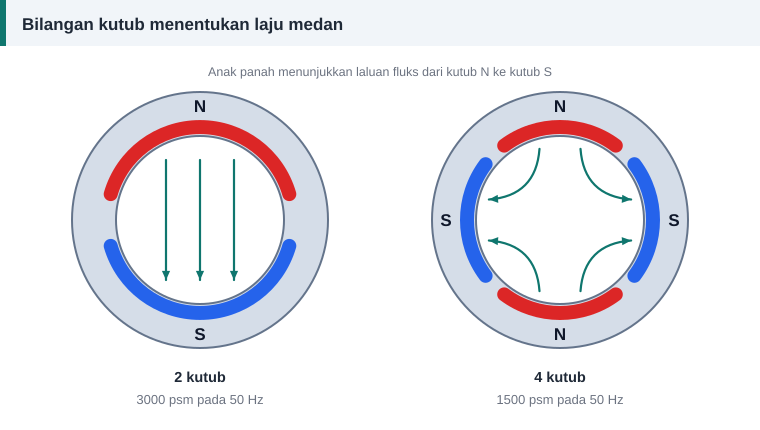

Asas motor
Laju Segerak, Bilangan Kutub dan Gelincir Motor
Tiga soalan yang paling kerap ditanya tentang laju motor aruhan dijawab di sini, satu demi satu.


Apakah laju segerak?
Belitan tiga fasa menghasilkan medan magnet yang berpusing di dalam stator. Kelajuan medan itu dipanggil laju segerak, dan ia hanya bergantung pada dua perkara:
Ns = 120 × f ÷ P
Ns ialah laju dalam pusingan seminit (psm), f frekuensi dalam hertz dan P bilangan kutub. Angka 120 muncul kerana satu kitar arus menggerakkan medan sejauh dua kutub, dan satu minit mempunyai 60 saat.
| Bilangan kutub | Laju segerak pada 50 Hz (psm) | Laju segerak pada 60 Hz (psm) |
|---|---|---|
| 2 | 3000 | 3600 |
| 4 | 1500 | 1800 |
| 6 | 1000 | 1200 |
| 8 | 750 | 900 |
| 10 | 600 | 720 |
| 12 | 500 | 600 |
Mengapa rotor tidak mencapai laju segerak?
Rotor motor aruhan menerima arusnya melalui aruhan. Aruhan hanya berlaku jika medan memotong bar rotor, iaitu jika rotor berpusing lebih perlahan daripada medan. Perbezaan itu dipanggil gelincir:
s = (Ns − N) ÷ Ns × 100%
Motor pada plat nama contoh berpusing 1420 psm. Laju segerak terdekat ialah 1500 psm, maka gelincirnya (1500 − 1420) ÷ 1500 = 5.3%. Motor kecil biasanya mempunyai gelincir beban penuh beberapa peratus, manakala motor besar lebih rendah.
Tanpa beban, rotor berpusing hampir pada laju segerak. Semakin berat beban, semakin besar gelincir dan semakin tinggi arus rotor.
Bagaimana mengetahui bilangan kutub tanpa plat nama?
- Daripada laju. Cari laju segerak yang sedikit lebih tinggi daripada laju beban penuh dalam jadual di atas.
- Daripada belitan lama. Rentang gegelung hampir sama dengan pic kutub. Jika stator 36 alur mempunyai gegelung yang merentang kira-kira 9 alur, pic kutub ialah 9 dan bilangan kutub ialah 36 ÷ 9 = 4.
- Daripada bilangan kumpulan gegelung. Belitan dua lapis tiga fasa mempunyai 3 × P kumpulan gegelung, jadi dua belas kumpulan bermaksud 4 kutub. Belitan satu lapis selalunya mempunyai separuh daripada bilangan itu.
Kesan menukar bilangan kutub
Bilangan kutub ditetapkan oleh cara gegelung disusun dan disambung, bukan oleh teras. Namun menukar kutub semasa lilitan semula bukan kerja menyalin. Fluks setiap kutub, ketumpatan fluks di kuk stator dan padanan alur stator dengan bar rotor semuanya berubah. Motor dua laju jenis Dahlander direka khas untuk tujuan itu. Tanpa pengiraan reka bentuk yang lengkap, kekalkan bilangan kutub asal.
Ringkasan
- Laju segerak = 120 × f ÷ P.
- Rotor motor aruhan sentiasa sedikit lebih perlahan daripada medan.
- Pada 50 Hz, laju plat nama sekitar 2850, 1420, 940 dan 700 psm sepadan dengan 2, 4, 6 dan 8 kutub.
- Bilangan kutub ialah data pertama yang diperlukan oleh kalkulator lilitan semula.
Rujukan dan bacaan lanjut
Artikel berkaitan
Cara Membaca Plat Nama Motor Elektrik
Plat nama memberi semua data yang diperlukan sebelum melilit semula: voltan, arus, laju, sambungan dan kelas penebat. Ketahui maksud setiap ruangan satu per satu.
Pic Kutub, Rentang Gegelung dan Faktor Pic
Rentang gegelung yang lebih pendek daripada pic kutub menjimatkan kuprum dan melicinkan gelombang voltan. Pelajari cara mengira pic kutub, rentang dan faktor pic dengan contoh.
Motor 60 Hz pada Bekalan 50 Hz: Kesan Voltan dan Frekuensi
Motor import 60 Hz tidak semestinya sesuai dengan bekalan 50 Hz. Nisbah voltan kepada frekuensi menentukan sama ada teras tepu, dan bila lilitan semula diperlukan.